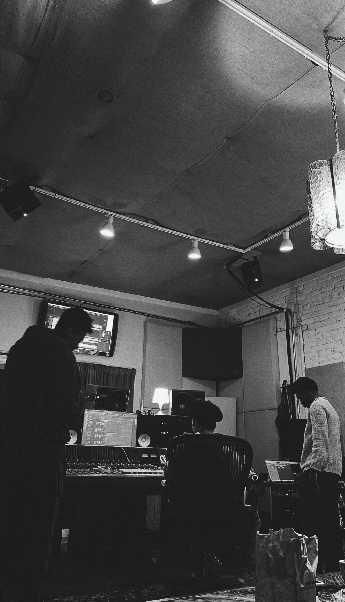
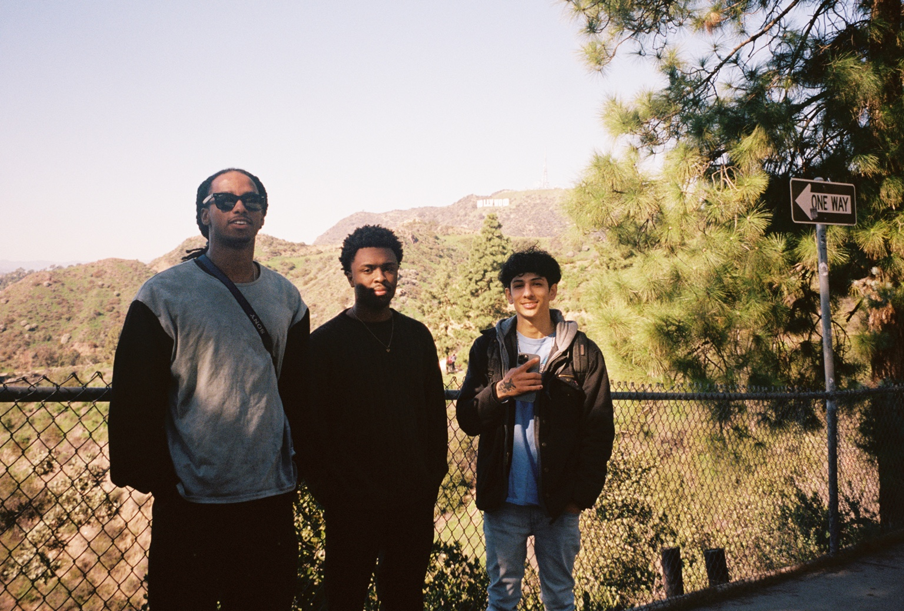
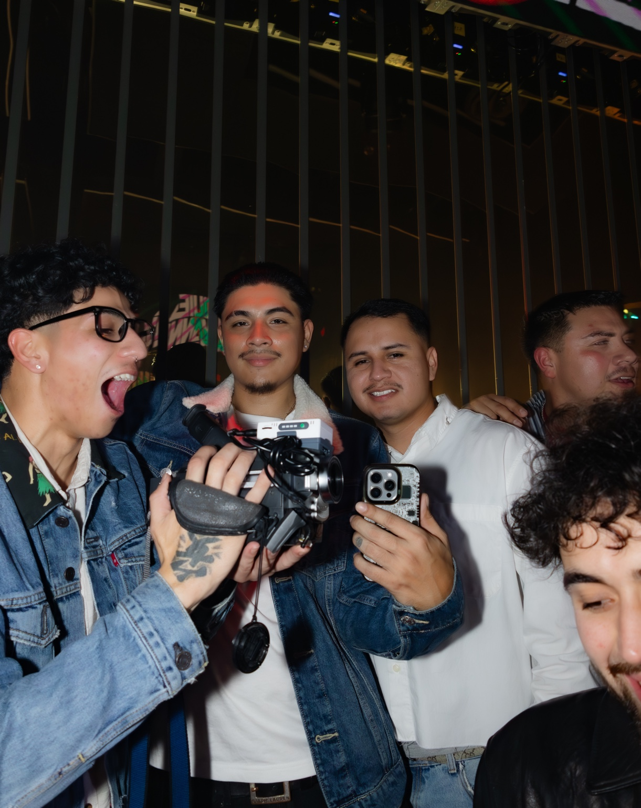
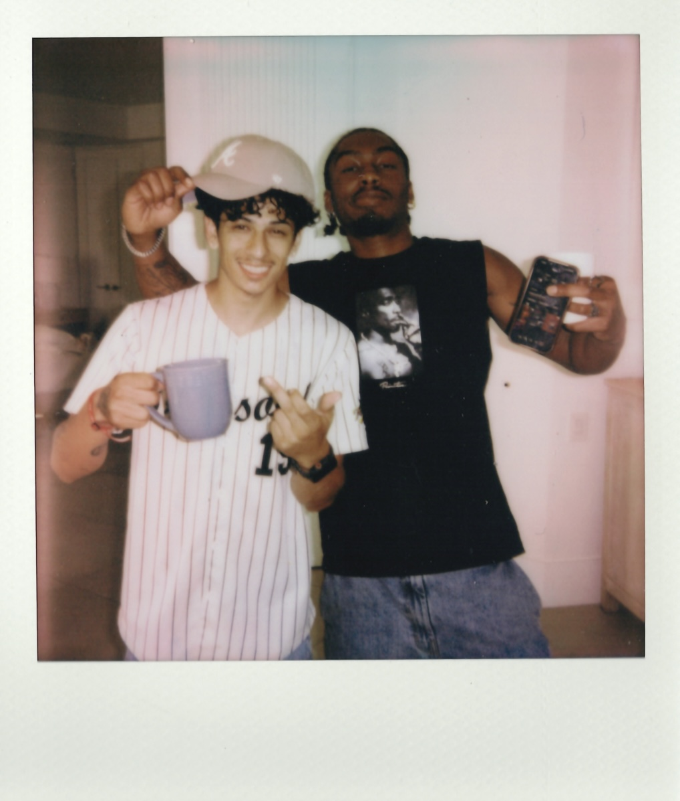

beginnings
you’re from salinas, california. how much do you feel growing up there influenced you creatively?
I wouldn't say it shaped me too much because I didn't grow up there for the majority of my life. I left Salinas to live with my dad in Sacramento around the age of eight.
But one thing I can definitely say influenced me creatively was hearing Chris Brown, T-Pain, and Kanye West on the radio a lot. Specifically 102.5. Who knows if that radio station is even still a thing out there haha.
Watching BET, VH1, and MTV definitely made me find my love for music too.
when did you first start becoming involved in music beyond just being a listener?
I want to say around the age of 17, so that would've been 2018.
I was in a music forum formerly called KanyeToThe.com, and I would go on this "Golfwang Leak" thread on there to look at Tyler, The Creator leaks. The OP's Instagram handle for his leak account was @golfwanginsider, and it inspired me to make a leak/fan page for Bryson Tiller called @tillerinsider.
I was already keeping up with all his stuff and finding information around the internet, so it just made sense.
I also set up an interview between SwaVay and a blogger on KTT, who now works for Complex. The video is still up to this day haha.
Even then, I still didn't know I wanted to participate in creating.
the fan page
what did running @tillerinsider eventually lead to?
It really became the foundation for everything that came right after.
By running the fan page, I was able to build a community around Bryson Tiller and his affiliates at the time, like Ryan Trey and Che Ecru.
I also managed to get tapped in with Bryson's camp, especially his best friend Swan.
Being young at the time and being tapped into Bryson's camp, I knew we had it all in our hands. It didn't feel far out of reach, especially because I believed in what me and Monroe had going on at the time.
I felt like I had nothing to lose by getting involved in everything I could.
Some things might not work, but you need to fail in order to discover what actually works.
Watching a lot of Donald Glover's Atlanta helped me with that confidence too.
monroe jordan
how did you meet monroe jordan?
In the beginning of 2019, I met Monroe Jordan through the Bryson Tiller community.
I had found his music through another Bryson fan's Instagram Story. I instantly fell in love with the sound and contacted him telling him his music was dope.
Later that summer, we started chatting more and began playing Apex Legends on Xbox, and that led to an instant connection.
With Swan being in the mix too, playing Apex Legends with us, I knew I could somehow get myself involved in this music space and detach myself from the whole Bryson Tiller thing.

when did you realize you actually belonged in that space?
The following year, I introduced Monroe to Devon, a producer who had worked on Ryan Trey's first project.
Monroe called me later that day and told me him and Devon clicked instantly.
I remember being so geeked when Monroe told me Devon was cooking up most of his EP ZEN.
That's when I really knew I was meant to belong in this space.
Maybe I didn't have a specific role, but I knew I could play all the hats, even if I wasn't too experienced in it.
picking up a camera
your relationship with cameras actually started when you were a kid. what do you remember?
I first picked up a camera when I was eight years old, only because my dad would make me hold it for him.
Throughout time, I started getting curious about how to use it. I wanted to understand the camera.
I never thought I'd end up falling in love with it ten years later.

when did you start shooting for yourself?
There was a period around 2021–2022 where I was shooting Polaroids just for the fun of it.
I even shot some at Ryan Trey's LA show and got them reposted.
But what truly had me like, "wow, I needa start shooting for real," was early 2023.
Monroe was coming out to LA for some studio sessions, and fortunately at the same time, Kristo had contacted me to see if we were down to meet in person since he was also in LA.
I had met Kristo on Discord a few months prior to this and was slowly getting to know him since he was a creative himself.
He came to our sessions and brought a Sony Hi8 Handycam.
He allowed me to use it and I instantly fell in love with it.
I would go on to film a few clips with it while we were there.
I knew right after that I needed to buy one ASAP.


nostalgia
what made vintage cameras feel so different to you?
In 2022, I watched jeen-yuhs, the documentary by Coodie and Kanye West.
The way that documentary was made and the feeling it was giving was like nothing else.
It made you feel like you were living in that moment. It was early 2000s footage, filmed with a GL2, and there was something about the way it looked and felt that really stuck with me.
I knew from that point on that I wanted to get into vintage camcorders and document moments.
Plus, the vintage camcorders are pretty easy to use in my opinion.
did you know you wanted to work specifically in music?
I knew I would film stuff in the music world, but for the most part, I wanted to shoot anything.
Priceless moments.
what do you want someone to feel when they watch your footage years later?
I just want people to have the opportunity to look back at footage ten years from now and be able to really feel that moment when they watch it.
A feeling of real nostalgia.
Digital cameras don't really give you that feeling nowadays.
I want people to feel like they went back in time.
what does “authentic” mean?
you use words like raw, authentic, and nostalgic a lot. what does authentic actually mean to you?
Authentic for me in this case means it was in the moment, not scripted or thought out.
That's what I want to capture.
why do you think that's so difficult to recreate today?
I feel like it's very hard nowadays to capture that feeling or look.
Even a VHS filter just makes it seem super unauthentic.
There's a difference between actually documenting something in the moment and trying to make something look like it was documented.
I want the real thing.
chase shakur
how did chase shakur become part of your story?
I met him through Monroe Jordan around 2020, and I was an instant fan of his music.
Me and the homie Janson used to post Monroe's and Chase's music on this music blog he ran called eleven0seven.
Chase's career started to rise in 2022, and I continued to support throughout the years while keeping a close relationship with his manager Jono.
when did that turn into actually working with him?
In 2023, I was fortunate enough to be able to shoot for Chase in San Francisco.
I had the opportunity to talk to Jono about my previous endeavors, one being the Bryson fanpage, and that caught his attention.
I eventually started managing Chase's fan pages with the previous knowledge I already had from the Bryson fanpage.

what drew you to chase creatively?
I also really gravitated towards the visual aesthetic Chase had.
A lot of the ideas we have are in the same space.
Being like-minded. Drawing similar inspirations.
It made my work flow easier.
I've learned a lot about what I'm capable of since I've started working with him.
I want to continue to grow with this team for sure.

the people around me
how important have your relationships with other creatives been to your evolution?
Those relationships are special.
I feel like me and my peers all feed off of each other in some sort of way.
Maybe I don't talk to my peers often like that nowadays, but I'm always showing love. Always.
I give my flowers when I can.
A lot of these guys inspire me, and I hope I inspire them as well.

where does kristo fit into that?
Kristo is an important piece to my evolution.
In moments where I felt like I had nothing, he showed me how much I am really capable of.
All I had to do was take action.
I look back at my old conversations with him and realize, "wow, he was right" haha.
what would things look like without these people?
I can't even imagine how shit would be without them.
Like a butterfly effect.
One thing leads to another.
One person leads to another.
You really can't change one part of the story without changing everything that comes after it.
They inspire me on the daily.
Every time I see them progress, it makes me want to go harder.
organically molded
when did all of this start becoming organically molded?
In the beginning of this year, I was outside often, creating nightlife VHS videos at clubs.
I started piecing everything together and realized everything I was doing could be formed into one thing: organically molded.
I actually had that name thought out since fall 2023.
Eventually, I built different mediums all under one.
I have @shootingvhs, @shootingin35mm, @musicrelatedwork, and some other mediums I might work on.
what does organically molded mean to you?
To me, it means to be built or put together organically.
No predetermined mold.
I still haven't made a logo for it yet, but I can already visualize it.
Something that has to do with a plant, palms or hands, and molding a pot of some sort with clay.
Something growing.
Something being shaped.
building a world
what kind of visual language are you drawn to?
A cinematic feel or aesthetic definitely catches my eye.
Minimalism, but minimalism that speaks loud.
Donald Glover's work is something I'm heavily influenced by.
why does his work resonate with you?
Donald Glover's work intertwines with everything.
I mean, look at him. He's a director, actor, musician, producer, writer, and comedian.
In everything he works in, it seems like it's coded. You know it's his work when you see it.
It all feels like it's part of one world that he's built.
I can't say I want to do all the things he's done, but I definitely want to see how far I can take things.
the vision
what do you see organically molded becoming?
I see organically molded being a creative haven of some sort for like-minded people.
Like a creative incubator.
I want to create jobs within that.
I see organically molded being capable of work on big-budget stuff for major record labels.
A production crew would be sick.
I got a lot of it thought out already.
do you want to personally be involved in every project?
I'm gonna have a crew doing that for me unless it's a project I really wanna work on.
And at that age, I might have already expanded into something crazier for organically molded.
is there anything you don't want organically molded to become?
I never want to run projects that are not suited for organically molded, respectfully.
I want to be able to have some exclusiveness when it comes to working with me.
I only do select projects, essentially projects I get tossed at me and I accept.
Not everything aligns with me, organically molded, and its visual identity or aesthetic.
what doesn't align?
Unintentional, manufactured, and very scripted type of things.
I wish I was better at explaining it, but I know when something's not suited for organically molded.
the next generation
what do you want to give the next generation that you didn't have?
I want to give them all the knowledge, resources, and things I wish I could've known at a young age.
I want the youth to be able to take advantage of their time and outdo me.
I started kind of late.
There are kids that can get started at such a young age and surpass where I'm at by the age of 25.
I want them to have that opportunity.
do you ever wish you'd started earlier?
I can just imagine having picked up a camera at 16 or 17, going to shows and getting started early haha.
But it's okay.
I'm happy with my journey.
Everything was meant to happen how it happened.
No regrets.
I really believe in the butterfly effect.
what's next?
what do you want to accomplish next?
I really want to direct a short film in the next three years.
I still don't know exactly what it is, but I know I want it to be cinematic.
Serious but also comedic.
Kind of like that one scene in Scarface where Tony Montana kills Frank and it's all dramatic until he tells Earnie, "You want a job, Earnie?"
I like that kind of contrast.
Raw.
Minimal.
Cinematic.
what are the things you know you need to accomplish?
One: go on tour with a music artist.
Two: build a studio.
Three: have my LLC ready.
what does “getting it all together” mean to you?
It means knowing exactly what I want and having a specific plan made.
I'm also about to be 26 years old, so I kinda needa get it all together haha.
looking back
what are you most proud of right now?
I'm proud of the work I've done over the last year.
I really evolved as a person and a creative.
what do you think has been driving that evolution?
My drive.
I think that's probably the biggest thing.
I'm always looking for something new to work on.
I'm still upgrading my gear, buying more camcorders and film cameras, finding new ways to create and present my art.
I still keep the same mindset.
I don't think that'll ever change.
the advice
if you could talk to your younger self, what would you tell him?
Pick up a damn camera, now!
Just kidding.
Well actually, yes, that haha.
But I'd also tell myself to ask questions.
Remember the worst answer you can get is no.
Be relentless.
no predetermined mold
when you look at everything you've built so far, how would you describe yourself?
I am a creator who has everything in his hands.
I just need a bit of organizing in all aspects.
and what do you hope all of this ultimately means?
I hope I am well spoken of in the communities I've touched.
I want to be able to be an inspiration for the next generation of creatives, especially in the music space.
R&B space, if I wasn't specific this whole time haha.
when you imagine yourself years from now, what do you hope you can look back on?
I don't even know haha.
By that age, I'll be able to say I traveled across the country doing different things with the people I love working with.
Maybe organically molded will have become something crazier.
Maybe I'll be doing things I can't even imagine right now.
I just want to keep creating.
Keep documenting.
Keep building.
And let everything happen organically.